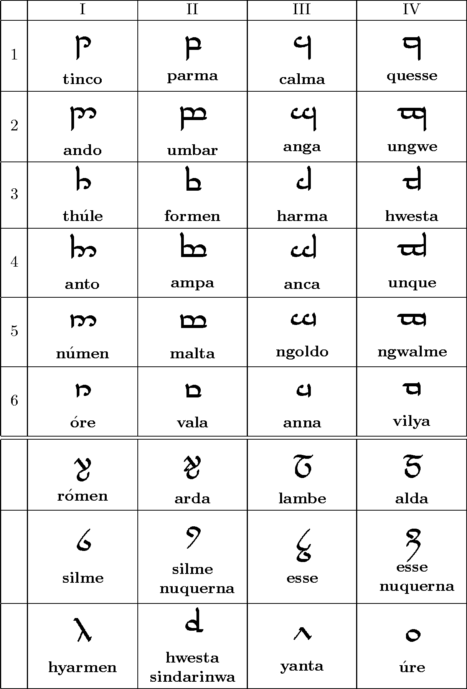

Tengwar
Tengwar (qya. litery, znaki) – system znaków stworzony przez J.R.R. Tolkiena na potrzeby zapisu quenyi i sindarinu, występujących w mitologii Śródziemia. Według Silmarillionu tengwar został opracowany przez elfów w zamierzchłych czasach, a twórcą kanonicznej wersji tengwaru jest Fëanor.

Agata Buła 1b